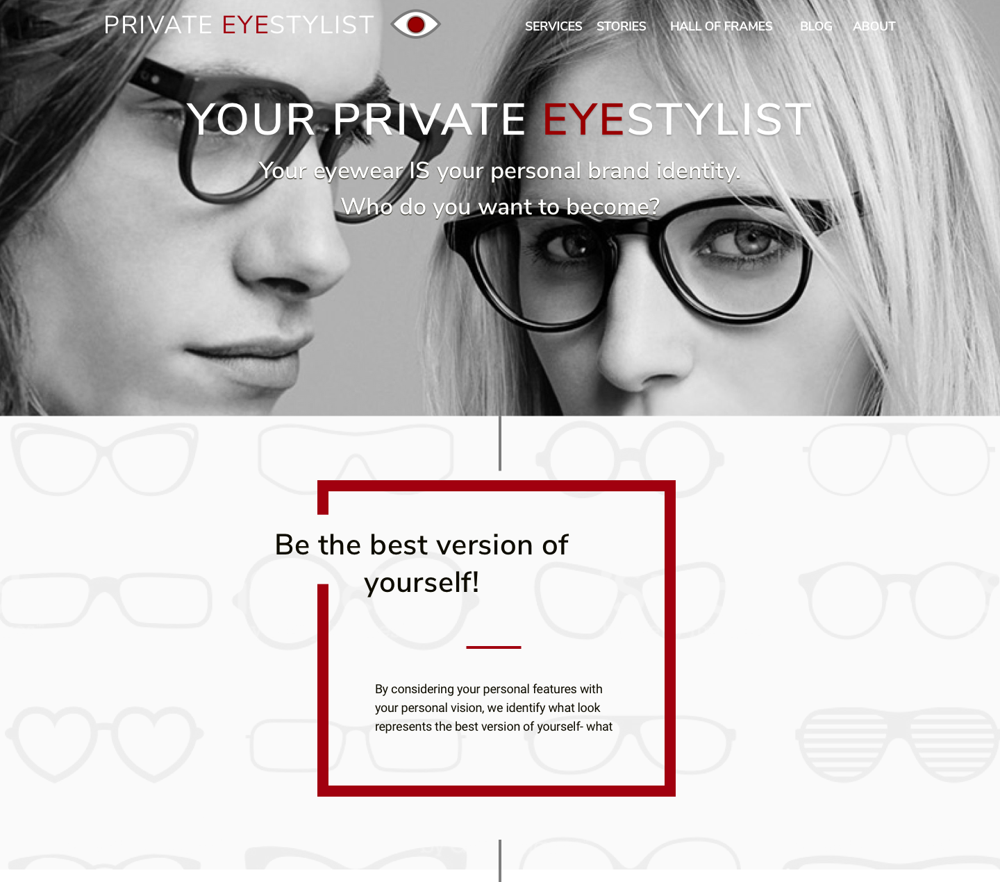
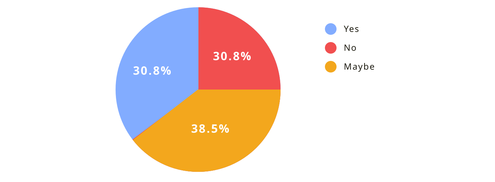
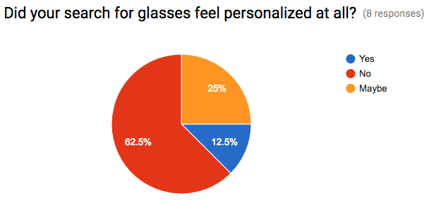

RG
Your Private Eyestylist
A site design for a Licensed Optician and Eyewear Stylist helping clients be the best version of themselves through consultations.
More and more people are buying glasses online these days, but they’re not sure what type of frames work well for them. Your Private EyeStylist can help advise you on the look you are trying to achieve through online consultations.
Your eyewear IS your personal brand identity.
Who do you want to become?
The Problem
Sometimes it’s hard deciding on what frames to get. The process can be overwhelming and confusing. What look do I want? Does the look of the frame fit my personality and personal goals? Do the frames fit my bone structure and skin tone?
The Private EyeStylist business idea was created by Eric Jay - a 25 year licensed Optician and Eyewear Stylist. My job was to help him fulfill his vision of taking what he loves to do at his eyewear shop to an online platform.
I had to help Eric come with a way to present his credentials, why the user would need this service, and options for buying in. This needed to be done in a fashionable way to show that Eric has a good fashion sense.
The Solution
For those people looking to change or enhance their look, they can view his process and pick a consultation package that best fits their needs. Consultations can be as simple as filling out a questionnaire and uploading a selfie or an in person video chat. For select cases Eric will even come to your home.

The Process
Competitive Analysis
While there are not many direct competitors in this space, there are a number of sites out there where you can purchase frames online. I analyzed each of those sites for features that we might consider adding to Your Private Eyestylist. One feature we are considering for a future release is the ability to upload a picture of yourself and then select frames to transpose over your face. We opted to move this into a later round simply because the site itself doesn’t sell products at this point, but rather Eric’s services.
User Survey
To get to an understanding of the prospective customers, I conducted a user survey to learn if they are currently buying frames online, and if so, what was their experience with online frame shopping like, and how they might use a service like Your Private EyeStylist.
Here are a few of the key insights gained from the survey:
- 69% of the respondents typically look or may look for guidance when buying eyeglasses.
- 50% have bought glasses online.
- 44% felt there was a lack of personal interaction when buying glasses online.
- 62% felt their search for glasses was not personalized at all.
Do you know how to pair wine with food?
Would you like advice on how to pair wine with food?
Personas
From the user survey results and my conversations with the client, we identified several potential customer types.
User Stories
With an understanding of our potential customers, I created a list of user stories documenting how users would engage with the site.
| Role | Task | Page | Action |
|---|---|---|---|
| A User | I want to learn about the services offered | Services | Main Nav link, Action link and Footer link |
| A User | A want to ready your blog | Blog | Main Nav link, Action link and Footer link |
| A User | I want to sign up for your blog updates | Blog | Sign Up for Blog Updates |
| A User | I want to read about your Hall of Frames reviews | Hall of Frames | Main Nav link, Action link, and Footer link |
| A User | I want to purchase a report from the home page | Home page | Purchase Report link |
| A User | I want to purchase a report from the Services page | Services page | Purchase Report link |
| A User | I want to purchase a report from the Services page | Services page | Purchase Report link |
| A User | I want to purchase a video consultation from the Home Page | Home page | Purchase Consultation Link |
| A User | I want to purchase a video consultation from the Services Page | Services page | Purchase Consultation Link |
| A User | I want to purchase an in home consultation from the Home page | Home page | Purchase Home Consultation Link |
| A User | I want to purchase an in home consultation from the Services page | Services page | Purchase Home Consultation Link |
| A User | I want to read about the charity you support | Chariy page | Footer Link |
User Flows
From the user stories, I created multiple user flows to help visualize how the customers would move through the site and achieve their goal of selecting one of Eric’s services.
Wireframes
Wireframe Type 1
Since this is a fashion-related site, I researched current design trends so the site would have a modern and elegant style. I came up with visual style that I felt would work well for the landing page as well as would highlight the client's goal of having a classy look for the site.

Wireframe Type 1 variation with the “Learn More” button laying over the images.

Wireframe Type 2
Mockups
Typography
In keeping with design goals, I presented three typography palettes for the client to choose from. The first was a serif font called Lora for headings that was paired with a sans-serif Roboto font. I also presented a more modern look with Nunito Sans for the headings paired with Roboto. The last option featured a Poppins-Roboto pairing. The client decided on the second option, using Nunito Sans & Roboto.
Color Psychology
I chose black because it’s associated with elegance and sophistication, white for it’s cleanliness and purity, and red as an accent color for vibrance and energy.
Mockup type 1 uses the Lora - Roboto pairing.
Mockup type 1 variation using the Nunito Sans - Roboto pairing.
For the second mockup, I went for a more open feel that highlights the selling points of the service. I also added transitions to the page giving it a more lively feel.
For the second mockup I also presented different colors, typography and hero images.
Poppin - Roboto font pairing.
Nunito Sans - Roboto font pairing with a different hero image.
Conclusion
With this project, I learned I need to be flexible with my clients. If they ask for a particular color it’s best not to just say no if you don’t think it will work, but to show them their idea and explain why the color isn’t the best choice. I also learned that I can push my design skills further by trying different layouts. By researching current designs I was inspired to design two layouts that I never dreamed I would be able to do. In addition, I learned that some initial ideas might develop into better ideas. For example, the Hall of Frames section is good for showing and selling products, however, since the client is not initially going to sell products a “Styles I like and why” section is more applicable so potential users of the service can read about Eric’s style preferences and see the styles he likes.
I’m currently working with the client on content for the secondary pages which I build out as time permits.
The site was designed using Sketch and is currently being built using HTML, CSS, and Javascript. The site is hosted on GitHub.